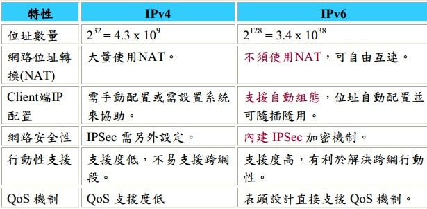

一、 从IPV6的前辈IPV4谈起
在网路中的每台主机和路由器都有一个IP地址用以识别这些主机。目前所有的IP地址都是32位元长度的IPV4，用在IP封包的来源和目的地址栏位。这些地址也被称为identifier。IPv4的地址占32位元长，可以分配地址给大约40亿个独立装置。
IPv4是一种无连接的协议，操作在使用分组交换的链路层上。此协议会尽最大努力交付分组（尽力而为），意即它不保证任何分组均能送达目的地，也不保证所有分组均按照正确的顺序无重复地到达。这些方面是由上层的传输协议处理的。
二、 因运而生的IPV6
不得不说IPV4是网络上的一个巨大的成功，但是随着互联网的迅速发展，全球网路终端（主机和路由器）的迅速增加（智能手机和平板的出现有木有！！！），IPV4提供的地址数逐渐显得不够用了。这里特别说一下我国（中国）的情况，当初划分IPV4的地址时，因为中国的网络还不是太普及，所以划分到的地址数目并不多。但是随着中国经济的崛起，网民数目激增，拥有网络IP的电子设备也是遍地开花，因而IP地址慢慢的出现了紧缺。
因此上，拥有跟多IP地址的IPV6因运而生。
三、 新协议IPV6
作为网络专家制定出来的IPV4升级产物，IPV6到底有什么优点，是否能够真正代替IPV4并避免IPV4出现的不足呢？
IPV6共有128位，16个一组，公8组（IPV4是32位，8个一组，4组）。 表达形式如：2001：288：7001：1000：0000：0000：0000：0001 。
PV6和IPV4的对比区别如下：
